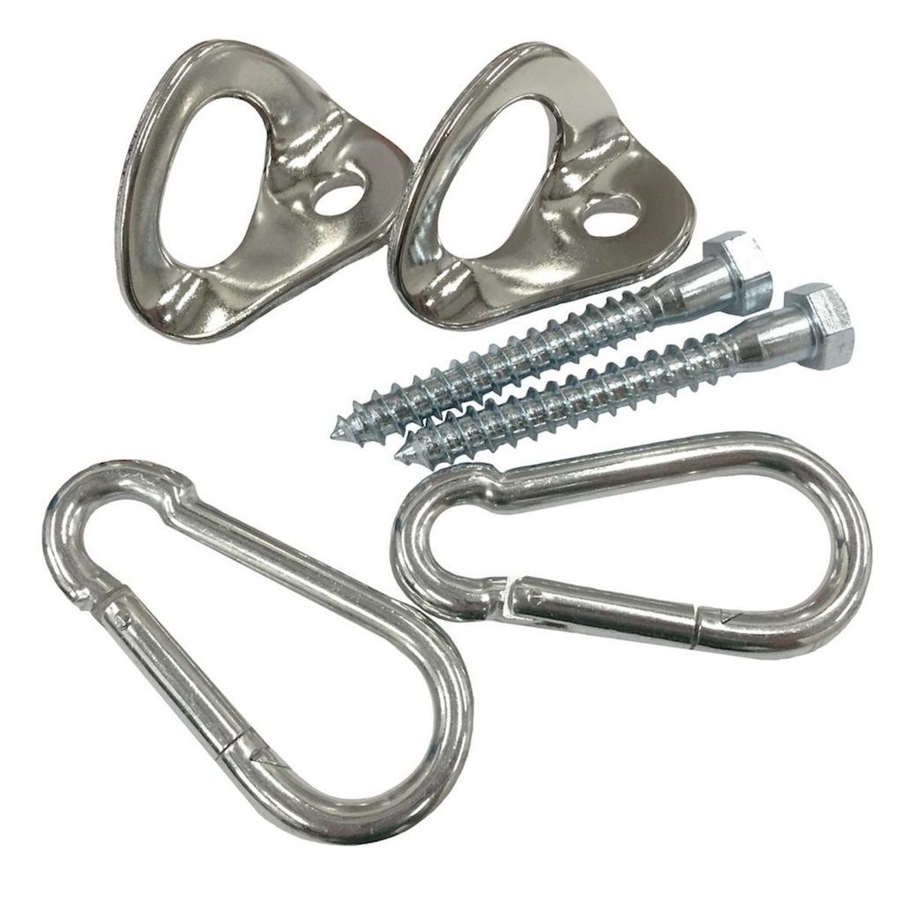
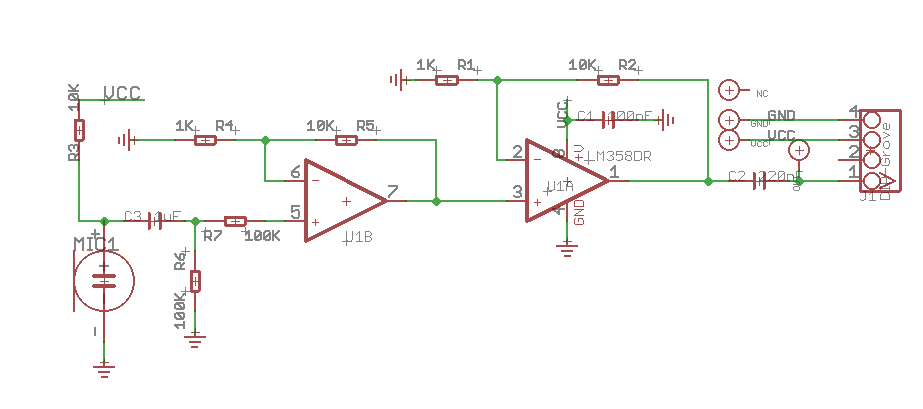
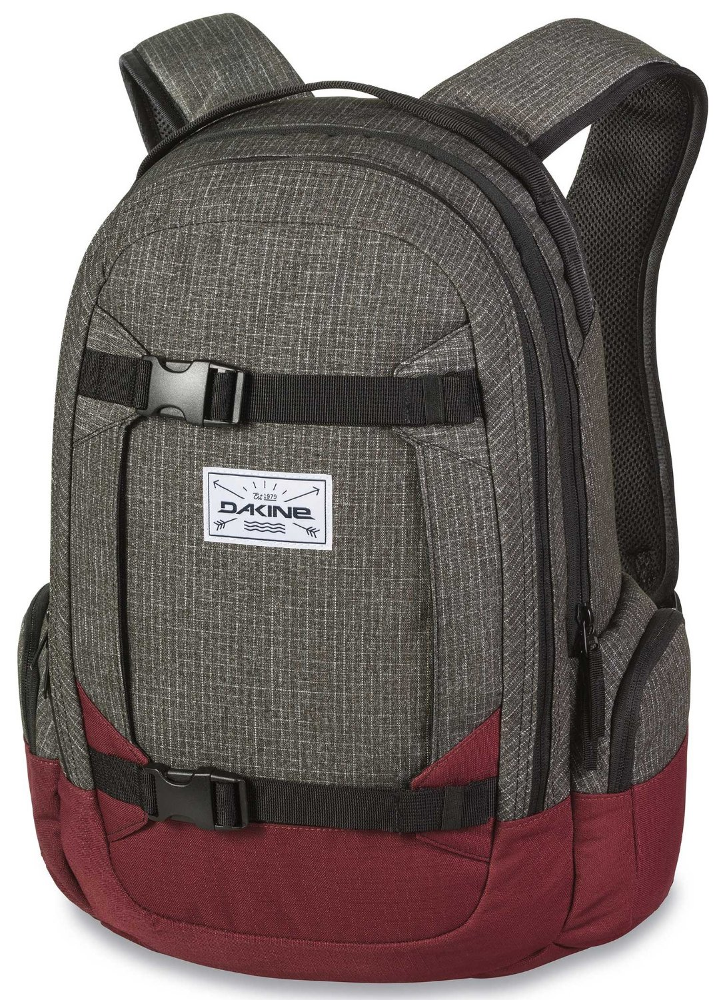
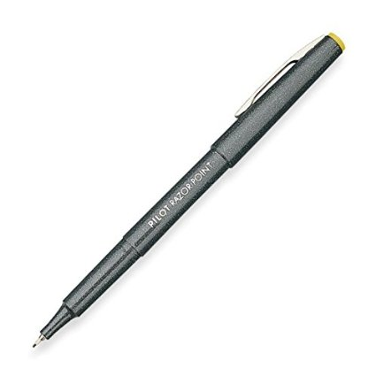
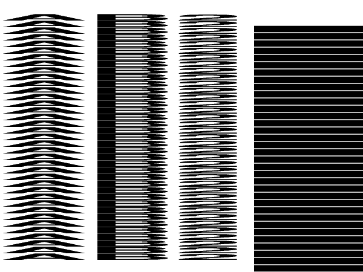
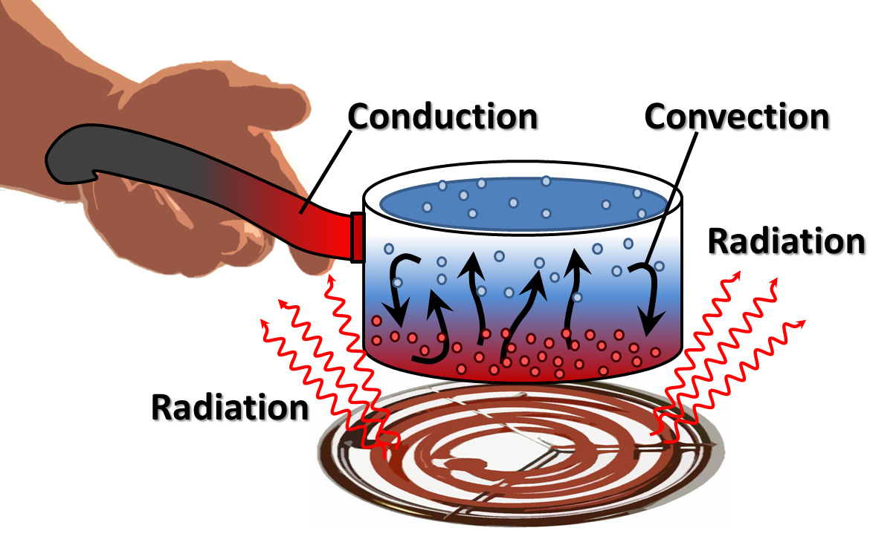

Table of Contents
Why are some wrappers metal lined and others clear plastic for sorta similar power bars?
Metallised_film#Properties. Water transmission I think??? Forgot…
Bucket Lid Seats
1 ply? https://www.amazon.com/Bucket-Lid-by-Lidz/dp/B00I3T1U5E.
Seems 2 ply: http://www.ebay.com/itm/Bucket-Lid-Seat-Plastic-Black-Clc-1140-/381068510120?hash=item58b97403a8:g:TQsAAOSwPCVX-XrX
Bucket Boss doesn't make the solid ones anymore. Just the organizer ones … http://www.homedepot.com/p/Bucket-Boss-5-Gal-Pro-Lid-10010/202332264
Steel vs Aluminum Carabiners
So, I did a little more reading.
You’re correct in saying that that aluminum fails due to repeated loads (called fatigue) whereas steel (when used in elastic range) does not. https://en.wikipedia.org/wiki/Fatigue_limit
However, if you do drop tests (impact), steel will break and aluminum is just fine, as this blog post tests with carabiners but doesn’t explain. https://fatcanyoners.org/bush-guide/dropped-carabiners/. This is a slightly different case
- What is the PSI in this case? Isn't this the same as a pull at maximum load?
{kind=link}
So, if you plan on doing lots of loaded fatigue (like aerial circus or bicycle frame work), you want to know what you’re doing.
Hammock
Need 2 eye hooks. 3/8“ thick is surpisingly good enough even down to 45 degrees. source.
Probably should put up a few 2×4's or leftover 2×6's to spread out the load though.
- hanging from ceiling doesn't end up working angle-wise.
Need 2 s hooks.
Aaanddd, some chain or rope?? Some way to make the mount work…
- Nope! Just some 1” solid nylon webbing (similar/same as tie down stuff with cinch for car) and some knot skills: https://www.youtube.com/watch?v=Ulw-EjskUko. Done!
.
{kind=link}
- What about these? Seems faster, but other wise not that much difference.
Green greens powder food stuff
https://www.vitaminshoppe.com/p/garden-of-life-perfect-food-600-g-powder/gu-1031 (can get 2 for 1 sales on everything with email distribution and you can buy it in their store (be sure to ask “can I get the online price”), otherwise I’d buy with amazon)
- Haven’t done a double blind study on it yet, but there seems to be correlation with not getting sick.
- Double blind on a different product with triathletes showed improved recovery times, better performance, etc. https://herbprod.com/products/powder-formulations/supremely-green-detail.html
- Tastes
goodnot bad when diluted properly with water (1:4 or 1:8 ratio if I remember right), but bitter with less water or applesauce (which has less liquid and more fiber). Still don't know how this flavor stuff works. - Not gritty like Amazing Grass Green Superfood. Dissolves best when added to water in a jar w/ lid and shaken.
Open AI Universe
Training artificial intelligence.
https://openai.com/blog/universe/. Lots of pre-packaged games just for training AI. I think it's run on your computer, not in the cloud.
Fish and growing food (hydroponic?)
Mr money mustache article is pretty cool.
- Can you do vertical farming with it?
- What about staple crops? Why just the crops on that list? Are other crops too sensitive?
- Why did Google do LED lights and soil?
- No weeds??? How??
2008 crash
Ira Glass story is great. https://www.thisamericanlife.org/radio-archives/episode/355/the-giant-pool-of-money
- Pressure was from “giant pool of money” ($70 trillion) to get more good investments better than 1% from Fed.
- Mortgage backed securities allowed to get rid of messiness of mortgage bonds while still allowing people to trade and bet on them and make money assuming people kept paying them.
- Normal loans weren't enough to match demand of “giant pool of money”, so there was incentive to make more loans because everyone along the chain would make money on the deals.
- It quickly became “race to the bottom” in terms of quality of loans because sales guys make money on sales / commissions and a buyer would shop around to whoever could offer them the best terms. So the riskiest loan maker would get the loans! (and everyone had to follow them)
- Everyone knew the loans were bad along the chain (including house buyer!). However, “everyone else was doing it”
- Ratings and data were based on historical data, which was on the good loans
Everyone knew the loans were bad.
Google X
Why are they doing it?
Loon
2-balloon system uses helium for main lifting. But it's ballast is air?!
- It pressurizes the air contained in the balloon so that it's denser than the air around it.
- Uses a centrifugal impeller, which has plenty of torque to pressurize the air enough inside the balloon. (doesn't use a pump + valve system like for an air compressor)
{kind=link}
Vertical Farming
Worked great (cost more in electricity though), however doesn't work for staple crops like rice or grains.
Massage
Lynn Aker is good person in Aloha.
The Big Short
The more real story. http://www.politico.com/magazine/story/2016/01/what-the-big-short-gets-wrong-213535
Apparently hollywood likes to make the story a bit bigger to sell more of the movie instead of being an accurate description. Same with The Social Network.
- Did Michael really cause some banks to go down because of his bet? How much did he gain? How did he have enough funds to keep paying $10 million per year when a lot of his backers pulled out?
- What is this about the fed being leveraged 77 to 1? Re-read that interview
Monopolies
Diamonds! Go with moissanite apparently. Ask Nick / Erica or look on Hacker News. Or discuss with your future wife if a “rock on your finger” (MEN!  ) is really that important. :P
) is really that important. :P
Glasses: controlled by Luxoticca. Go with Zenni optical instaed? Or $1 glasses for 3rd world. https://news.ycombinator.com/item?id=13091936 and 60 minutes special
Casinos and Gambling
It even starts at the city arcade place!
YouTube Link! https://www.youtube.com/watch?v=vXBfwgwT1nQ
http://www.theatlantic.com/magazine/archive/2016/12/losing-it-all/505814/?single_page=true
- Near misses mainly are a huge problem. near misses, false wins, and other EGM practices
The Four Pillars
Your hesitance to read a few investment books is costing you $500 per month, for each $100K in the bank
When a famous investor publishes a newsletter, it’s a sure tip-off that his techniques have stopped working! –John Brooks, financial journalist
So, if you could spend the time to beat the market as
Vanguard VTSAX isn't necessarily tax optimized (lower dividends = medium growth companies), but the tax optimized alternative https://personal.vanguard.com/us/funds/snapshot?FundId=5102&FundIntExt=INT#tab=4 is only %.2 less dividends (at least this YEAR only >.<) and the difference in fees is .07%. And…you miss out on the growth of companies that do pay dividends. Ehh…someday later
Demon of our own desire
Bubble bath
“Wealth effect”, define? Author calls it bad to have a wealth effect, where one increase risk if they start winning. Aka house effect.
This causes losers to drop out of market and winners to continue investing, convincing/newspapering and betting riskier bets.
The small float percentage of early internet companies didn't help either. Small number of people could influence market.
The bubble forms because people care about making money off of other people, not the actual product. IPOs are designed in this way, so that the “insiders” can inject their stock into the market while enthusiasm is high and get cash from people that think the price will rise higher. The last ones remaining are stuck holding worth-much-less stock!
Illiquid near peak because nobody wants to buy
Economics Explained
Ch 1
Yeah…why is income inequality a bad thing?
Our long term prosperity has depended to no small degree on a distribution of incomes that bolsters the buying power of lower and middle income families.
While pre-capitalism didn't have a lot of freedoms and wasn't high output, it was somewhat secure! Unlike today where we have more output, but little security other than probabilities.
Mr Money Mustache
.
Read 7 habits of highly effective people
Hedonic adaptation.. http://www.mrmoneymustache.com/2011/10/22/what-is-hedonic-adaptation-and-how-can-it-turn-you-into-a-sukka/
-
- Calculator. Try it yourself first…https://www.cruncher.io/?/2oZdCauqHA
- Borrow dad's panniers for now. Need to get a rear rack though, maybe from bike place downtown? Think about it some mroe…
- Take back roads with less traffic, like brookwood or evergreen? and then neighborhood streets for less debris on road compared to Intel street.
Food
Recipes for fatty stuff. Still not sure on bacon, but other things look good. http://www.mrmoneymustache.com/2013/04/18/the-amazing-waist-slimming-wallet-fattening-nutrient/
- I have a feeling not having carbs isn't that good either
Wheat and oats are about 1/4 protein to carbs
- Aren't they complex carbs though?
- Add more seeds (chia, sunflower, flax) to bring up fat and protein to carb ratio.
- Optionally drink smoothie. Recipe he mentions includes banana, which is carbs and sugar?!?! Also a banana is 75% water…crazy
Whey or soy protein are probably fine. Isolate means it's further processed (potentially less good stuff for you, but absorbs fast) and doesn't taste like powder, but is more expensive.
What if
Everyone is frugal / mustachian?
- Not a problem, everyone will consume less and think about what they are consuming.
Everyone retires early and repairs stuff / builds houses?
This is the kicker
- Are cube jobs that inefficient in getting products out the door? Is management dumb for making you make powerpoint presentations for another team, when both of you have the same goal, to sync progress with another team and bring them up to speed?
- Granted, it's questionable whether they are good products, but it is really hard to ship a product and make money on the deal!
- Randy and Anne Wright are a counter-example. They are doing BodyTrack and various other non-trivial things that they feel are important.
- People work hard to deliver products reliably. Be thankful when you're retired!
http://www.mrmoneymustache.com/2012/04/09/what-if-everyone-became-frugal/ and http://www.mrmoneymustache.com/2011/09/12/book-review-economics-explained/
Related Posts
Excellent example of it not working  .
.
Demo with Jetpack (what they're currently using) and YARPP (scale CPU usage down initially?. It should be quite fast..)
Import posts to Wordpress from RSS: https://wordpress.org/plugins/rss-post-importer/. SOmething didn't work. Try below , then parse and have post only and import to Wordpress using a HTML import plugin or plop into database directly.
//Wait 5 seconds. Only accept files called index.html wget --mirror -w 5 -A index.html http://www.mrmoneymustache.com/
- Force YARPP to do the entire computation / caching ahead of time? Force the job done
- This guy says it has problems with WP cache
 . Make it so it recomputes on each page load? https://pablisher.nicer2.com/how-to-modify-yarpp-cache-type-to-improve-wordpress-performance/
. Make it so it recomputes on each page load? https://pablisher.nicer2.com/how-to-modify-yarpp-cache-type-to-improve-wordpress-performance/
- See if they use TF-IDF (I think so…he says keywords in his talk http://wordpress.tv/2011/01/29/michael-mitcho-erlewine-the-yet-another-related-posts-plugin-algorithm-explained/).
- If not borrow from this guy: https://github.com/alfanick/jekyll-related-posts
Make it Possible
idea
Clap clapper to turn off light.
Algorithm should listen for loud noise for .004 seconds and then quiet for greater than some amount, and then repeated again. So it won't trip for loud noise all the time.
So the Seeed studio microphone sensor probably works as a microphone. However, the output gain is quite huge, to the point that talking sounds like clapping and it takes a while for the clap to go back to 0.
- It'd be worth looking at the signal under an oscilloscope to see what it's doing to the signal. what it's outputting.
- . Try to figure out correct amplifier value using a simulator? A good learning experience…
- Start simple with just one and then build up. Why did they use dual amplifier?
{kind=link}
// Light Clapper experiment for Centro Cultural // Nolan Hergert const int pinMic = A0; const int pinRelay = 4; // Should be distinct time period of clap, and allow clap in loud environment. More to do.. // Max analog sensor reading on Arduino 101 is 1024, 2^10 const int ThresholdHigh = 0.9 * 1024; const int ThresholdLow = 0.4 * 1024; // Guessing this for now for Arduino 101 // Number of analog samples per second const int SamplingFrequency = 32000; //Hz // Trigger on First clap // Wait for first clap to end // Gap of quiet until GapMin // Trigger on Second clap enum ClapState { FIRST, WAIT, GAP, SECOND }; ClapState state = FIRST; // How long to wait until the "end of clap" // There seems to be a filter on Seeed Studio microphone, so // adjust to be longer const int WaitTime = 0.15*SamplingFrequency; // Allowable gap in samples between first clap and second clap const int GapMin = 0.25*SamplingFrequency; const int GapMax = 0.5*SamplingFrequency; // Measured in samples, not seconds int count = 0; int micVal = 0; int relayState = 0; void setup() { Serial.begin(115200); //Serial.println("Grove - Sound Sensor Test..."); pinMode(LED_BUILTIN, OUTPUT); pinMode(pinRelay, OUTPUT); digitalWrite(LED_BUILTIN, LOW); } void loop() { micVal = analogRead(pinMic); if (count%1000 == 0) { Serial.print(state); Serial.print(","); Serial.print(micVal); Serial.println(""); } count = count + 1; switch(state) { case FIRST: if (micVal > ThresholdHigh) { // Reset count and go to next state count = 0; state = WAIT; } break; case WAIT: if (count > WaitTime) { state = GAP; } break; case GAP: if (micVal > ThresholdLow) { // Too loud environment state = FIRST; Serial.println("Too loud"); } else if (count > GapMin) { state = SECOND; } break; case SECOND: if (count > GapMax) { // Too long in between claps state = FIRST; } else if (micVal > ThresholdHigh) { // TOGGLE THAT LIGHT SWITCH! Serial.println("TRIGGERING RELAY"); if (relayState == 0) { digitalWrite(pinRelay, HIGH); relayState = 1; } else { digitalWrite(pinRelay, LOW); relayState = 0; } state = FIRST; } break; } /* int maxVal = 0; for(int i=0; i<1000; i++) { maxVal = max(maxVal,analogRead(pinMic)); } //sum >>= 5; Serial.println(maxVal); //delay(10); */ } }
import wave import winsound import struct # Should be distinct time period of clap, and allow clap in loud environment. More to do.. ThresholdHigh = 0.5 * 0x7FFF; ThresholdLow = 0.3 * 0x7FFF; SamplingFrequency = 44100 # samples per second GapMin = 0.25*SamplingFrequency GapMax = 0.5*SamplingFrequency waitTime = .02 * SamplingFrequency class ClapState: FIRST, WAIT, GAP, SECOND = range(4) state = ClapState.FIRST count = 0 with wave.open('claps2.wav','rb') as f: SamplingFrequency = f.getframerate() length = f.getnframes() for i in range(0,length): waveData = f.readframes(1) data = struct.unpack("<h", waveData) #print(data) value = int(data[0]) #for value in f.readframes(1): count += 1 #print(count) #print(value) #print(state) #print if state == ClapState.FIRST: if value > ThresholdHigh: # Reset count and go to next state count = 0 state = ClapState.WAIT elif state == ClapState.WAIT: if count > waitTime: state = ClapState.GAP elif state == ClapState.GAP: if value > ThresholdLow: # Too loud state = ClapState.FIRST elif count >= GapMin: state = ClapState.SECOND elif state == ClapState.SECOND: # Too long between claps #print(count,GapMax) if (count >= GapMax): state = ClapState.FIRST elif value > ThresholdHigh: # TOGGLE THAT LIGHT SWITCH! # Just play a sound for now.. print(value,float(count)/SamplingFrequency,float(i)/SamplingFrequency) winsound.PlaySound("SystemHand", winsound.SND_ALIAS) state = ClapState.FIRST #winsound.PlaySound("SystemHand", winsound.SND_ALIAS) #winsound.PlaySound("intel.wav")
Questions on donating
Kinda interested in giving away some money as Intel matches non-profit and educational contributions each up to $5K. site
- What will the money be used for? Lame question, but it helps distill the revenue sheet things
- Great article: https://newrepublic.com/article/120178/problem-international-development-and-plan-fix-it
- You can't just evaluate an NGO by their overhead costs and use that to distinguish the good NGO's from the bad. That promotes NGOs that try and minimize their overhead to the expense of doing good research to see if their changes actually help! You have to do some work as a donor!
Kickstart
I liked their old graphic showing the 10-year impact of giving away stuff for free vs. selling it.
On the smell of old books
Probably won't ever need this again, but it was kinda interesting.
Overview article, they use gas chromatography and mass spectrometry (wikipedia) to determine the compounds and compare them to known ages.
- So … how do they determine the original concentration? They use a known half life and then look at the current concentration
Dryer
If you can wait longer, set the dryer on low/no heat and blow air through a while. Then when the air is not so easily saturated, then turn up the heat. From Is it more efficient to dry clothes on high?
Maytag Centennial
| Our Dryer | Dryer #2 with moisture sensor |
|---|---|
| MEDC400VW0 | mede300vf0 |
| Moisture sensor repair bulletin for this dryer apparently, according to Google | |
| Use and Care Guide (both don't mention cleaning the sensor) | Use and Care Guide |
| Parts list (no moisture sensor) | Parts list (doesn't mention moisture sensor) |
The auto dry is being dumb. Makes me think the moisture sensor is on the fritz, but it's not on the inside of the drum anywhere.
This service bulletin looks cool for repairing a moisture sensor. http://www.pwslaundry.com/files/docs/maytag-whirlpool/Tech-Sheet-8563816-Rev-B.pdf, but it's not for our dryer really.
Maytag parts list on their website. http://www.maytag.com/digitalassets/MLPDF/Repair%20Part%20List%20-%20W10217481.pdf
NEED TO CLEAN THE VENT!
Cables
Monoprice is very cheap and good quality. PCH cables is next up for instant turnaround time (in Hillsboro) and 3-4X prices, then Best Buy is ~8X prices.
House Buying
Buy home without an agent, FAQ's from Redfish. They seem reasonable…
Removable Double Sided Tape (foam?)
I like 3M VHB so far better than the cheaper foam (green) roll. More easily removable in one piece like command strips, whereas green roll just tears.
Also would like a viscous pre-treatment of silicone sheath so it's an easier surface to grip to than silicone…
Maybe http://www.teacherstape.com/ or Command strips refill https://www.amazon.com/Command-Refill-Strips-Medium-9-Strips/dp/B0014CQGW4/ref=pd_sim_60_3?ie=UTF8&psc=1&refRID=7DBSJSDCWXPB7V5041P5
Or just gaff tape doubled over.
- Or “carpet tape” (double sided gaff tape). I wonder if it falls off less that way…
- But it's probably not very removable.
Is double sided tape better than single sided bound around? No quick results on Google …
Police
Don't talk to police EXCELLENT. Part 1, and watch part 2 too!
- One main point is the police can mishear you and it's their word against yours <of what you said> at that point unless you are recording.
while “anything you say can/ will be used against you” ; nothing you say can/ will be used to help you.
Shut up! (great punchy intro, that has apparently happened enough to be worth repeating)
<you're at home in the morning>
Suddenly there's a thunderous pounding on the door, and loud men are shouting something at you. Your heart lurches and the adrenaline jolts you. You open the door, and there is a team of FBI agents, guns prominently displayed in holsters, raid jackets open. They are large and aggressive and unfriendly. They tell you they have a search warrant for your home and push past you. Two of them grab you, bodily turn you around, and handcuff you. They'll say later they had to do that to secure the scene and assure agent safety, and that you totally weren't in custody or anything.
<they continue to put you in a cop car and take you to the station>
The agents begin to question you about your business dealings. They don't read you your rights first — they'll say later they didn't have to, because you totally weren't in custody, despite being handcuffed in the back of a G-ride in your underwear surrounded by FBI agents in raid jackets. The agents tag-team you, switch topics rapidly, play good-cop-bad-cop, and use every law enforcement rhetorical trick to intimidate you. We have some really serious questions here, they say. But if you just cooperate, maybe we can clear all of this up.
Cop tackling biker was completely wrong in his account later that night. Without film, never would have been released. http://www.nytimes.com/2008/07/30/nyregion/30about.html?em&ex=1217563200&en=e162726ad1b6d34b&ei=5087&_r=0
It is legal to film when you suspect the police are doing something wrong and in public.
“Are you detaining me or am I free to go?”
YouTube Link! https://www.youtube.com/watch?v=eDJrQBwJpqk
Deodorant
One article says “shave your hairs!”, another (wikipedia) says “keep 'em for better evaporation!” 
https://www.reddit.com/r/onebag/comments/5jq3rb/meta_body_odor_specifically_from_armpits/
- Recommends hibiclens to kill bacteria. Then use crystal deodorant (can get at walgreens). Let's see how it goes!
- “Crystal is basically salt”. It doesn't act as an anti-perspirant (so you can still sweat buckets), but rather makes it annoying for bacteria to grow.
- Ph of Crystal is 3. Not all salts are acidic. Epsom salt is neutral ph.
Aluminum
It's forming a physical plug on the surface of the skin. Also, unless you eat it, you don't get enough of a dose to cause problems. Really nice WebMD article. http://www.webmd.com/skin-problems-and-treatments/features/antiperspirant-facts-safety#3
Will aluminum kill you / brain damage?
- Yes, if ingested, but no, follow-up studies on Alzheimer's patients show no increase in aluminum levels. https://www.scientificamerican.com/article/is-there-any-proof-that-a/
Baking soda. Maybe try with stick for moisturizers, or just apply some directly.
- The key factor is that baking soda is amphoteric. This means that it can react both with strong acids and with strong bases which are typically smelly compounds (sour milk, rotten fish, fatty acids in sweat). https://chemistry.stackexchange.com/questions/4465/how-does-sodium-bicarbonate-act-as-a-deodorizing-agent
- Mineral salt deodorant, http://www.thecrystal.com/
- DON'T USE BAKING SODA ON YOUR SKIN! https://www.reddit.com/r/SkincareAddiction/comments/195lue/psa_please_do_not_use_baking_soda_on_your_skin_it/
- DIY baking soda and skin stuff recipe: https://www.reddit.com/r/YouShouldKnow/comments/1hbh3p/ysk_that_making_your_own_deodorant_is_cheaper/
Stains
Mom says Gainey ranch in Scottsdale AZ had good smelling towels. They send them out, but contacting the Housekeeping department directly through the operator isn't going so well…Try again another day.
- Uniforms department uses Master Cleaners and Mission Linen.
Hot Baking soda and water / hydrogen peroxide does great for grease, apparently rust, and under armpit stains. Armpit, citric acid too?
- Main ingredients in Oxiclean!
Sodium Percarbonate and Sodium Carbonate. The first is baking soda and the second is washing soda. This stuff is just what my grandma used! These substances form oxygen, hydrogen peroxide and soda ash when mixed with water. The oxygen is what cleans and brightens. There are no phosphates or bleach, which are two of the worst environmental offenders in most laundry products.
{kind=link}
Dashcam
Bandwidth
| Card | Seq. Write | Seq Read (unnnecessary) |
|---|---|---|
| Samsung Evo (USB adapter) | 12 MB/s | 18 MB/s |
| Motorola G6 Internal Androbench | 86 MB/s | 235 MB/s |
However Viofo dashcam refuses to record more than 25 mbps…hmm…
Can I process raw near-full-res footage real time?
- Don't need high FPS really. Just low shutter speed
Deblur
Best to just lower the shutter rate as much as possible. Also maybe do some of these tricks: https://www.getscw.com/knowledge-base/license-plate-cameras
OpenALPR? Open source but they have online pay for use too. Doesn't deblur
$50 more to get some more resolution? Probably worth it. Also, I don't really want the circular polarizer as it reduces nighttime light…
- Can get cigarette lighter USB charger to get parking mode. But probably don't care about it for current car.
https://www.youtube.com/watch?v=d-KBKzkOKS0
https://www.blackboxmycar.com/products/viofo-a119-v3-qhd-dash-cam?variant=14189380730935
- Code is VORTEX20
Trying out one for my bike. Kinda getting run over sometimes. And it's pretty cheap. People like the Xiaomi Yi, and it's cheap for ~$50. Plan on surrounding with ziploc bag or something and mounting with magnets. Done!
- Apparently other brands use cheaper sensors and then just upsample in software to get 4K. Lame.
- Going with 1080p 30fps as it's 26mbps bitrate, as opposed to 1440p 30fps which is 30mbps. Less card heat and less pixels and higher bandwidth per pixel. 4K is still 30mbps, boooo.
Bought a mobius cam.
This one might work well, but went with this one.
* [[https://www.amazon.com/Suction-Mount-Tripod-Adapter-Camera/dp/B00B1V5LB0/ref=sr_1_39?ie=UTF8&qid=1473532628&sr=8-39&keywords=suction+cup+mount|This one]] didn't work for dash cam. Too long
Quantitative Investing / Technical Analysis
Nice site for studying it is Quantopian.com.
Makes me want to switch my day job and do signal processing algorithms for real problems. Don't quit, but put it in the time on your free time to move on.
Book in Python: http://www.ebooksbucket.com/uploads/economicsandfinance/finance/Python_for_Finance.pdf
Belt
I wear around a size 32“/33” pants, and since I probably am not getting smaller, the belt that fits best for the long term is 36“.
Fossil belt ran a little small for me. 32 is 1 inch too short for the hole. 33 it is, unless I find a better one that is full grain or top grain
- Ratcheting belts sound/look cool. EasyBelt is cheap brand, there are more upscale ones.
- Not sure I want/need them though. Leather will still wear out
- Real leather is pretty hard!
- AR: What is
- Canvas material is cool, seems like it's easy to clean up.
- However, might fade over time??? Re-dye?
- The Grip6 belt buckle (really thin aluminum and tough bite edge) doesn't work long term and starts warping nylon at that spot if you put weight on it. Just don't hold up…
- Plastic buckle will eventually break or friction fit won't “click/hold” after a while
- Bi-mart had seemingly real/glued leather ones for $10-15, however, I didn't like any of the buckle styles.
- Target are all plastic coated, even if they say genuine leather.
Amazon Prime
- Sign up for monthly using https://www.amazon.com/dp/B00DBYBNEE. Flow using cart method seems to only be yearly >.<
- Also, hopefully they will indicate when the item will be delivered if you get 2-day delivery with amazon prime instead of requiring you to have Prime to see that value…
Backpack
Pictures
{kind=link}
{kind=link}
Ideas
Dakine

But no water bottle holder… 
{kind=link}
Ful backpack (didn't like long-term)
{kind=link}
Bad
- White sections get sweaty and show wear early
- Bottom, while water proof, starts breaking early and looks real tacky.
- Long stringy things are annoying to strap up
Good
- Otherwise great, hasn't broken down at all!
iMac replace hard drive
Need this program for 3rd party hard drives to replace SMC code: http://exirion.net/ssdfanctrl/
https://www.ifixit.com/Guide/iMac+Intel+27-Inch+EMC+2429+Hard+Drive+Replacement/7555
Magic
Guy recommended the Tarbell Course in Magic. On wikipedia and archive.org
Skiing with Skis Skiriously
Maciej says there's a gradient in skis. Fresh powder, you want skis with lots of rocker, or concaveness, so that you stay “floating” in the snow and your tip doesn't dig into the snow and send you flying.
For groomed slopes, you want longer and wider? skis. Copy what the slolam jumpers do
- At high speeds, small skis tend to fishtail –> hard to control
- Taking turns at high speeds is hard with small skis. Large ones can dig more because they have the whole length of the ski
Scam Calls
Good overview article http://www.cnbc.com/id/100887510
- Nomorobo won the FTC contest.
Dermatology
If you want the color to be down to 0, do Finacea, or laser treatment in fall/winter.
Sailing Simulator
How do they sail upwind anyways?
http://www.nationalgeographic.com/volvooceanrace/interactives/sailing/ax/sailing.swf for now, until their main page is fixed…
Video Games
Philosophy of them. They can be treated as a “choose your own adventure” simulation environment too, and have quite a dramatic effect on people!
Hiking
Forest Park (Portland)
Restrooms only at Pittock Mansion, Oregon Audobon Society, and at Cannon Trail trailhead. Nice map here
Getting rid of Smell
Ozone machine is one option.
- Seems to be safe to use as a blaster. Generates radical molecules, but it's okay to just fan them out I think
- Hydroponic gardeners use it too…http://maximumyield.com/blog/2014/01/01/ozone-a-growroom-super-tool/. It says you can *see* the mold die! ?!
- Degrades plastic / rubber (elastomers). So move the rubber tire out of the back of the car and anything you want to keep.
- Will probably degrade phone case some too, but I'd rather it not smell like smoke too!
- Ozone is denser than air?!? How is it stuck in the atmosphere then? It's warmed by UV >.<
- How long to run 3500mg/hr ozone generator?
- 1 liter of air at 21% oxygen possesses 0.21 L of oxygen. Since at STP 1 mole of gas occupies 22.4 L, simply divide 0.21/22.4, to arrive at 0.0094 moles of oxygen.
- Molar mass (grams/mol) of oxygen is 15.994 ~ 16.0
- 1 * .0094 * 15.994 * 1000 / 60 minutes = 1 liter / 2.5 minutes
- For non-car things like shoes or shorts, try the ozone generator instead of the also effective, baking soda and hot water.
For car smells
Caused by mold, you want to get rid of the moisture too. Use dehumidifier, which wikipedia says can be a dual-design air conditioner like: http://portland.craigslist.org/clk/app/5448257359.html
Bible Study T-Chart
I trust Nanley to not waste my time on unimportant details or to be tricking / brainwashing me into believing something by being familiar with it.
Don't like right now:
- Bible studies that assume I am Christian already
- No “answers in the back of the book” for hard <but good> questions that it asks
Transportation App for Smartphone
Merritt suggested Transit App. Here maps seems good too, and Google Maps doesn't seem to do offline transit.
- But then again I could have planned ahead better too…
Migrating windows to new computer?
It might just work. Use Ubuntu live cd. Run lsblk to find name of new HD (sdc for me). Then run dd to copy MBR (gparted doesn't do this for some reason) here.
Migrating windows requires running sysprep, but be sure to clone first then run sysprep on new drive. Then you can always fall back. Thanks http://superuser.com/questions/644862/move-existing-windows-7-installation-to-new-computer
Philosophers Playing Sorry
Dehumidifier for Car
Powered one is probably best, but not that cheap / needs power.
Wikipedia potential paragraph work
For the common usage scenario of getting rid of moisture in an overly damp environment with little maintenance, absorbing water For the common scenario of dehumidifying a damp environment quickly with little maintenance at a reasonable price point, calcium chloride performs the best (50% of weight absorbed), followed by very well compared much better than other well-known desiccants and can be purchased at similar prices.[1]
- Rate of desiccant absorption. Article indicates that after 4 days, calcium chloride and silica gel had the same weight, then calcium chloride kept going
- Saturation point as percent of weight
- Chemistry "Drying Agent Selection Guide" with no helpful indicators of what we care about! (price, saturation as % weight, rate of absorption, etc)
- Maybe update the dehumidifier section too. https://en.wikipedia.org/wiki/Dehumidifier
- Cheap solution is Calcium Chloride / DampRid / Dri-z. Dri-z has a funny looking canister.
- Ice melt is the same stuff. $.50/pound. However some ice melt is not made of calcium chloride. It won't perform as well as dehumidifying as CC. The way you tell is read the label for CC or see if it only goes to -10C and not -25C like CC.
- Nice side-by-side comparison of desiccants (rice and the reusable ones perform poorly).
- Why is it turning hard?!?! It is melting and getting reabsorbed. You'll notice it starts out “hard” too, just in separate capsule things
Cell Tower
OpenBTS and YateBTS. Cheap to free alternative or something. Used at Burning Man for 50,000 people to have cell service in the middle of the desert. Article
Conversation with Nikki He's Husband
At Intel work party. Higher level manager in the Intel Open Source division in Hillsboro. His wife is on the validation team in the ME group.
3 really wacky things about quantum mechanics:
- Quantum entanglement, how flipping one particle on one side of the “room/universe” will always flip a particle on the other side, with no contact between them!
- Double-Slit Experiment, how not observing light photons passing through a double slit produces a a sinc interference pattern (light is a wave), but observing the photons and what slit they go through turns them into particles with a non-wave distribution
- Heisenberg's uncertainty principle: If you shrink a slit smaller and smaller, eventually you will know where the photons from a laser will be. However, right at that point, the light distribution on the screen spreads out horizontally, quite wide actually! This is described by Heisenberg's formula, stating that you can't know both position and momentum simultaneously.
What bothers him is that we may never know the reason behind quantum mechanics, gravity, and many other wacky physics phenomena. Reality might be like trying to explain calculus to a dog.
Also, no one wants to fund/study it because you have to be better than Einstein in order to make progress in your lifetime, and investors want returns and academia want papers… So it'll probably happen when we want to get something else done, like the atomic bomb or relativity research with GPS (I think that's a true story)
Christmas Lights
Christmas lights are nice in your room.
What would happen if you drove/modulated a 12V LED light chain at mhz frequencies using a signal generator (not a power supply). Maybe it could look something like this:
{kind=link}
What frequency would you need? If light/electricity travels 1m in ~.3ns, then you'd need a ~3Ghz switcher for 1m long cable. 10m, then .3Ghz switcher. If you were trying to drive christmas lights, I'm pretty sure that whole range is a long way around of making a really loud unlicensed radio antenna, which your neighbors won't like. If you used 1 LED and a fiber optic cable, that might be better, but you couldn't hardly see the light! IDEA BUSTED but it was fun 
Writing Utensils
Why can't I decide between pen and pencil?
- Why do I like felt more than ball point? Otherwise, the Precise V5 lasts forever
-  (one I had in college for a while. Tends to die easily. Sharpie pen comfort one is nice, but the cap splinters after a while and doesn't stay stuck, put some tape inside to increase size)
IR Thermometer
Measure highly reflective materials with some masking dark tape. Not sure if I need it yet… “hotter than boiling” is fine. Steam on IR sensor can prevent it from reading correctly too!
Gmail Backup
Gmvault looks good. Makes gzip of each individual file, huge overhead to transfer file by file. One giant file is better than that.
Using Thunderbird for now. Fast indexed search.
Why do I need this again?
Pumpkin Pie Flavoring
Want something for oatmeal. Most coffee shops use pumpkin pie spice flavoring, which keeps on the shelf for forever and tastes better than just the “spice mix” of cinnamon, cloves, and nutmeg.
- Try it out at Harvest coffee place, or at Starbucks with hot chocolate.
- Torani sells a syrup and a sauce.
- OliveNation sells some too: https://www.olivenation.com/pumpkin-pie-natural-flavor-organic-compliant.html
ADA Guidelines
Backing up data
You're going to have bit rot over time. Take out HDD and SSD over time and re-run an ECC tool to refresh the storage charges / magnetism as well as put more data on there.
Intel Chips
None of the i* series support dual socket (2 CPU's on a board), only Xeons do. But…why would you need that when you can just buy another computer?
- Dual-socket server boards are only $300, normal prices.
- i7 is about same price as e5. What gives?
Moire Pattern
Maybe do a noisy image except for specific spots where you show what you want. This might work better in a corporate environment, as there's no backlight and you can't move the paper but people walk by.
It's simply drawing
Nice video, it'd be cool to make a “web app” too. Youtube: YouTube Link! https://www.youtube.com/watch?v=4nn1MqCMa1M
{kind=link}
Reflective Tape / Spray
Need to make my black ski gloves reflective for biking and signaling cars.
- I think the pack I bought 180 - 300 microns is too large. The 35-50 micron size seems better.
- Try out the pack you already bought. Use craft glue or the acrylic spray paint as a backing, and it'll reflect more with a white / metal background.
- Reflect-All is the other option, sales rep recommends only using a light coating.
Water Bottle
- Trying out the Intel acrylic one for $5. The tumbler with straw hardly leaks at all when tipped, especially if you fill in the hole a little bit. Not sure why they didn't make the hole smaller…
- Acrylic straw dies a bit when you use hotter than drinkable temps. FAQs
- The straw broke. McDonald's and Dutch Bros straws worked well as replacements.
- Also, just fell down and broke a few days ago. I'll leave my water bottles on the ground from now on.
- Took the plunge and got a $15 stainless steel insulated with straw one at Fred Meyer.
- Only 16 oz though. And bite valve. Oooooh…data…
- If I want bigger, I can get a $25 24 oz one, but I'm good enough for now
 YAYYYY I'M DONE RESEARCHING!
YAYYYY I'M DONE RESEARCHING!
- Radiation, convection, conduction. But what is the relative differences between the 3? 
{kind=link}
Good reasons
- Remove bottle condensation dripping on keyboard / ruining desk –> headband or double walled
- Ice cubes clicking together when tipping bottle to take drink –> straw, stainless steel for coffee?
- Sealed and automatically closed top, don't have to worry about tipping it and ruining things. Hard to get sealed + valved straw
Bad Reasons
- Stays cold/hot for 18 HOURS!!!!
 Way better than 4 hours Not needed in office environment where ice cubes are available, but for hot things or outdoor things it is nice
Way better than 4 hours Not needed in office environment where ice cubes are available, but for hot things or outdoor things it is nice - Typically uses stainless steel, so you eliminate the IR thermal radiation.
- Also, typically uses double-walled chamber, and then vacuum-sealed on top of that.
Sales / Marketing
{kind=link}
DC Persistent Memory
{kind=link}
{kind=link}
Why do you never win the car?!
https://news.ycombinator.com/item?id=17392995, particularly https://news.ycombinator.com/item?id=17399149
The hack is to attend, tell them you go once a year, sometimes twice, to some ethnic ancestral home town, and you'll buy on the spot if they have a timeshare there. Pick out some two-stop-light town in some out of the way country, that doesn't even have AirBnB rooms, and you can see the sales people visibly deflate as they vainly look for a listing in Borat-istan. Put on a show of being all sad, and explain that you can't imagine paying for their fantastic deal for only 15% of your annual travel budget, but to put you down in the wait list as the first to buy when they expand to your home town.
You are in-and-out in the allotted time, with the freebies, usually three hours max. I actually like inspecting the actual buildings to try to spot whether or not they took shortcuts, as how these scams work fascinates me, and some of these places have genuinely good ideas I scrapbook for my homebuilding notes, so I don't mind the lead up to the real sales pitch where I deflate them, but I'm sure you can modify the hack so you open with your counter-pitch and are in and out in minutes. I've seen people report they tell the salespeople up front they only came for the freebies, they're never buying, and if both sides agree to discreetly walk early so the sales manager doesn't notice, they'll rate the sales effort A++++ (there are always surveys afterwards), and are out in minutes.
I'm curious with groups like 419 Eaters why there aren't more organized scambaiters for timeshare scams. The freebies are legit, and if you're planning to be in a particular area anyways, three hours for a 1-2 day stay, especially if you like seeing how others solve various housing-related challenges, is a good trade.
They do give you stuff for free. I got two free tickets to Disney. I just had to convince them that I was interested in buying a timeshare for 90 minutes. Once I got past that mark, they were obligated to give me the tickets - a fact that I promptly reminded them about. Two aggressive sales people and one super pissed off sales manager later, and I was off to Disney. I would never do it again - it was sheer agony.
You can rent people's timeshares usually for the maintenance fee. If you really want to own a timeshare, buy it on the secondary market for a fraction of the cost.
> Why is it always timeshares?
They're as expensive as a car, but sold (a) remotely (so the customer has no opportunity to inspect before buying) and (b) within a vacation mindset (which makes people less diligent about diligence). TL; DR Used car salesmen with fewer checks on their behaviour.
At the last one she dragged me to, the pitch guy sat down, and before he said anything, I said “I don’t like you. I’m not buying anything. You can give us the free tickets now, or we can sit here staring at each other uncomfortably for the next hour before you give us the free tickets.” Then I stared at him until he folded.
pwg 18 hours ago [-]
Roping the unsuspecting into an incredibly expensive time-share using hard-sell boiler-room tactics without ever being up-front about the true costs.
I sat through one of these once, curious about how it was going to go, and with the intent going in of not ever buying anything anyway. They present the timeshare as if it costs only pennies a day, and never admit to the true cost unless pressed very hard (and even then they never quote a final figure). What they are really selling is a loan package for the purchase of the timeshare (where the timeshare company is themselves loan originator) with an attached interest rate of something like 12 or 13% APR (bank mortgages at the time I sat through the one I sat through were running about 3.5-4% APR). The timeshare, if you can squeeze a dollar figure out of them comes out to be about $40,000 for which they finance it for you at their 12-13% APR (so a gold mine for them, but bad for you).
I ended up getting the double-team effort (two trying to convince me to jump in) to try to sell me on the value of the scam before I had finally had enough and cut off the sales pitch. Meanwhile, all around me (they did the pitch in a large room with small tables where everyone was in view of everyone else) I was watching the gullible filling out their “loan applications” and setting themselves up for $500/month for the next ten to twenty years before they could pay off the 'loan'.
The cost, plus the interest, was setup such that one would be hard put to actually be able to go on enough vacations at the timeshare to actually make the timeshare profitable for the new owner. If one went on the number of vacations that are typical, one was setting oneself up for each vacation ultimately costing $25K+ (for what should have cost only about $2-3K). This, of course, was the intent of the group running the timeshare, hide the true cost enough that the gullible don't realize they are paying $25K for what should have cost them $3K, and pocket the difference as pure profit.
reply
bane 16 hours ago [-]
I went to one to satisfy the same sort of morbid fascination as well. I really have to hand it to the sales people, it was one of the most incredible sales pitches I've ever seen.
They shuttled us to one of their premier properties where they took us to a sales room and served us breakfast. After a few moments they had everybody gather around a large presentation screen and a salesman who spent the next hour not just going over all the “benefits” of buying a timeshare, but tying that to a scripted and intensely acted “deeply personal”, tear jerking story that ranged through decades of his life. The delivery was world class small stage acting – it was that impressive. After that they paired us all off with a secondary sales guy who took us to a model room and start on the normal high pressure sales tactics.
Our only escape was that we simply lied about our income and looked to be too poor to ever afford anything they had on offer and told them we were only interested in vacationing to places they didn't have a presence. It was quite an intense experience. We left, got our free tickets to a show and were shuttled back to where it all started about 3 hours earlier.
It was absolutely bizarre and I kind of can't believe the entire operation is legal.
- A later post says the maintenance fees ($100/month for each week you reserve = $1200 / year) are about what you'd pay for a week at a hotel in the area, maybe a little more. But why not just book a hotel anywhere! But it's the loan that makes them money.
I did one of these also, and I absolutely don't regret it. I think I learned more about (ruthless) sales tactics in two hours than I ever have from books or classes. … Oh well, the free travel and event tickets were actually a great dollars-per-hour value - as long as you said no.
- Selling with a celebrity works, particularly if you look up to the celebrity. When you wear or use the thing, then you feel like the celebrity felt in the ad!
(what is selling today…complexity, but simplicity, and a tattoo)
{kind=link}
Corporate marketing
Join the DCG AMD Competitive Insight Forum, Friday, Feb. 24 After a five year hiatus, AMD has plans of returning to the x86 server market with their new Zen CPU architecture. They are expected to launch their server CPUs in Q2 17.
Join us at the AMD Competitive Insight Forum, Friday, February 24, for a panel discussion on the AMD competitiveness and DCG’s strategy to compete and win.
- How much of this is marketing guys trying to stay busy?
- Do we really need to “fight back”? Maybe it's that the news people / “thought leaders” might be influenced and Intel needs to talk to them by fighting back to AMD's claims directly, instead of just doing a superior product, kinda like Apple nowadays (contrasted with Mac vs PC)
Bodytrack Alternative
- “Make sense of data” from Intel Labs https://makesenseofdata.com/
Encryption
Perseids on SO suggests that encryption/security is really hard to get right as opposed to other IT disciplines.
- Talks about padding oracle attack and a great “normal” scenario that leads to it
- Recommends a great intro textbook where the authors say “We don't actually know how to create secure code,” –> so borrow a good implementation.
Public and private key cryptography SO
- Another use of cryptography is to verify it to make it act like a “digital signature”.
Conversation with Logan
Working on it…
Start with this…
https://youtu.be/LGGFpQMOAYQ?t=6m29s (Microsoft Research Chris Bishop doing 2008 Royal Institution Christmas Lectures)
- How do digital keys/locks work?
- Public Key Exchange
- other stuff I'm watching as we speak
- It takes me a few times of watching to “get” it, so don't feel bad if it seems like magic the first time around.
- The beginning of the video is on the question “how do we determine what web pages are popular or not?”, which is off-topic but also simply but brilliantly explained. If it doesn't bore you, the rest of the series is pretty good too but wasn't that memorable for me (maybe I learned it in school already).
Ok, here's a good explanation of public / private keys: https://www.youtube.com/watch?v=GSIDS_lvRv4
And for an overview of the math (talks about modular arithmetic, but not random number generation), this one looks good. https://www.khanacademy.org/computing/computer-science/cryptography/modern-crypt/v/the-fundamental-theorem-of-arithmetic-1
I remember Wikipedia being a good explanation of random number generators, so I'll refer you to that. https://en.wikipedia.org/wiki/Random_number_generation.
I would enjoy discussing it further. Also, feel free to drop it if it's not interesting to you.
Replacing laptop battery
IBM / Lenovo laptops have these external batteries that use 18650 cells. The effort of replacing them seems to not be justified if all your cells are dead, but if you have only one bad cell it might be worth it. great walkthrough, and Really indepth blackhat talk
"Grandparent-proof" Computer
Aunt just got slammed with a pop-up on Internet Explorer that yelled at her about viruses and she needed to call a number. Almost lost $500 for “necessary remote support”
- Eldy OS? And/or, Chrome or Firefox with Adblock Plus installed and lock her out of installing anything new on the computer.
Patents
I thought I had notes about this….
- Patents help you ensure that an idea that you came up with is used accordingly to how you want to use it.
- You can have whatever licensing you want
- So, patent your idea before “patent sharks” get to it.
- Ira Glass has a great investigative set of podcasts: http://www.thisamericanlife.org/radio-archives/episode/496/when-patents-attack-part-two
Stock Market Game on Computer
Doing it online is nice, as everyone can use it, but I don't really like the look of Javascript?!?
Just get the prototype working. Then port later to get the fancy motions and stuff if you want them.
Smoke Alarm
Ionizing Sensor (Nuclear)
Non-Ionizing
Carbon Monoxide
Audio Latency
Xperf and WPA debugging to the rescue! Another tool is LatencyMon, which you installed already. Doesn't really help for my problem.
//Have to be inside of C:\Program Files (x86)\Windows Kits\8.1\Windows Performance Toolkit xperf -on PROC_THREAD+LOADER+PROFILE+INTERRUPT+DPC+DRIVERS+POWER+IDLE_STATES -stackwalk Profile -BufferSize 1024 -MinBuffers 256 -MaxBuffers 256 -MaxFile 256 -FileMode Circular xperf -stop -d C:\trace\CPU.etl
N.T. Wright
Basic Christianity
So far very good! At least by good meaning he is aligned with how I currently am thinking.
There are lots of hints as to a better way of doing things. What should we make of them?
Doesn't think we can find / discover God of the Universe on our own, unless He chooses to reveal himself. Kind of like a maze where a lot of paths lead to the center, but the center is blocked out on all paths by tall hedges.
Security of Flash Drives
Apparently they are still pretty vulnerable. IBM blackhat pdf. Mom's flash drive masqueraded as a CD and was auto-loaded….uhhhh…windows??!!?
- It's how the Stuxnet virus was <ahem created by the US and Israel> to attack Iran nuclear plants specifically.
Hybrid / Electric Cars
So if the $4,400 battery cost crops up in four years, my cost analysis ($3/gal gasoline, $0.15/kWh electricity, 5,000 miles/year in EV mode) indicates a propulsion cost savings of $100 per year (about 15% savings on yearly total propulsion cost, assuming 10,000 miles total per year). Compared to the $1100/year in battery premium cost, this saving is practically invisible/meaningless. Batteries becoming twice or even four times cheaper will not offset the differential. source
Brian Greenstone (rich EV car guy also with an Aston Martin)
- Expensive to replace the batteries, much more than price of gasoline over time.
- Pure electric doesn't have as many hoses with fluid in them, but still wears the same otherwise.
The patent on large-size NIMH batteries being owned by Chevron is true wikipedia, but it is nullified because the patent fee wasn't paid in 2010.
Tesla Superchargers are 120KW, whereas the fast CHAdeMO chargers are 65KW. But still pretty fast!
OBDII / OBD2
SD Card logger + GPS + accelerometer. Might be useful someday, but not right now. Freematics Logger ($60) ScanTool ones seem the most reliable. here. It's also just a pin switch to change between High Speed and Medium Speed bus.
- Doesn't support Apple iOS bluetooth though for some reason….
- This one uses Wifi, but might not support the Ford MS bus.
Outlook
Kelly's awesome super dooper ooper. In dropbox called SuperDuperOOPer_setup.exe
Keyboard Shortcuts
| CTRL + Q | Mark read |
| CTRL + U | Mark unread |
C.S. Lewis
Meaning
Original Quote:
If the whole universe has no meaning, we should never have found out that it has no meaning: just as, if there were no light in the universe and therefore no creatures with eyes, we should never know it was dark. Dark would be without meaning.
The trick to this one is recognizing that “The universe has no meaning” is a meaningful statement. It's kind of like the trick where “there's no absolute truth”, but it's an absolutely true statement.- I still don't get it…
Sex
Sexual Promiscuity from a post-marriage perspective, Have We No Right to Happiness?
- It is for
love'ssake that I have deceived my wife, broken her heart, and betrayed my friend at her greatest need. - To treat sex as just another impulse and thus ok isn't true. “It's like having a morality in which stealing fruit is considered wrong – unless you steal nectarines”
- We reign in our other impulses…why not this one?
What ISIS / Al Qaeda Really Wants
Interesting article: http://www.theatlantic.com/features/archive/2015/02/what-isis-really-wants/384980/. No more notes 
Printer
Weirdness with HP Laserjet 1320 on OS X. Updating driver with Apple Software update fixed it (19.8 to 19.13), but can't find any more info (what changed?!?!) in 10 minutes of searching. Thread, and offensive PDF here
Brother
If you want automatic duplex printing, it has to have a D in the name (L2340DW)
People recommend turning on IPv6 for brother wireless printers. Also, only 32MB of ram and single sided ADF. Also “Find the Toner Replace menu under the General tab on the back-end control panel, and switch it to Continue as soon as you can.” (it tends to stop printing earlier than it should based on toner level)
- Brother multifunction laser, only $15 more than without all that here
- Its gray cousin for $20 more, the MFCL2700DW adds a fax.
LGBT stuff
Common response is “Yeah! Why should religion dictate public policy?!”. Some counter by spouting statistics about how LGBT parents aren't as good as regular parents. >.<
- Also, “Christians, why are you judging people outside of the church?”. From here
Cooling drink / food fast
Keep it in ice (optionally salted) water, with salt if easy to rinse off again.
Also, other methods http://lifehacks.stackexchange.com/questions/24/what-is-the-quickest-way-to-cool-down-a-room-temperature-drink-without-pouring-i/42#42
Wifi bad signal
Another option is ethernet over powerline. This seems like a decent 2-pack
To add to existing powerline network, you have to press and hold the security button for 2 seconds on an existing adapter, the power button should blink. Then on the new adapter, press and hold its button for 2 seconds. Then wait for up to 2 minutes (it seems like) for the power button lights to stop blinking and then they should be acquired. So frustrating >.<
Interview Question Tektronix
{kind=link}
Selling and Shipping Stuff
- Best to try and sell it local on Craigslist so you don't have to spend time planning or packing at all.
- Find a box and packaging for your stuff before you sell. Then you can see if it actually fits in that Priority Mail flat rate box or you can start scrounging for boxes and packaging materials. Then you can accurately list the weight and dimensions for Ebay to accurately estimate shipping based on location. Maybe throw in a few bucks for handling?
- Packing peanuts are bad, as they will move as your product moves. Lowering protection in areas.
- Best are air-packs that don't move and distribute small-area impacts to a large area, unlike bubble-wrap or foam, etc.
- For books, pre-print the media mail postage from … either Amazon or USPS website then drop off at USPS at package drop thing.
- UPS store marks up <media mail> postage 2X.
- USPS self service won't do media mail >.<
Fixing Refrigerators / Freezers
LG Fridge
Heater works when it's put into test mode 3 and is cold enough. It will do 3 sets of 3 beeps, if not cold enough it won't do any beeps in test mode 3 and won't run the heater.
Now what…
Amana
We think our Amana fridge ran out of refrigerant (there was a leak somewhere). Since it's really hard to find leaks in something like that, we got rid of it.
Youtube Video (an excellent example of something that should be written down on a blog post and not babbled on a video pointing at nothing :) )
- Common problem is compressor relay giving out. It starts, but then immediately clicks off.
- If you let it go too far, then you can burn out the compressor, which costs you $130 + refrigerant + filling refrigerant correctly, etc. –> You're better off buying a new fridge at that point.
- The other problem is the defrost timer gives out. For most older / cheaper models it's not solid state. It can get stuck in the defrost cycle, or the freeze cycle! Both are sort of bad over time.
- He bought a solid-state UET120 timer and stuck it in there. Replaces most Whirlpool and other brands. Be sure to hook it up right though, the wiring for each number might be different?!?! uet120.pdf and defrost_systems.pdf (good intro from Whirlpool on how these things work).
For our Whirlpool, the freezer part works, but it built up an incredible amount of frost! So, the defrost heater wasn't working…
- It took me a while to debug, but it's the timer that went bad!
New Intel Job
Review with OSTEP and 18-447. Mutlu's suggested books are at the bottom of that page.
- Kin recommended PSU professor Jonathan Walpole
IBM Watson Food Generator
It's only okay for now…https://www.ibmchefwatson.com/app/recipebox/#page1/1093//16562//2304-1586-1950-1594-604-1031-1105-898-1074-105-1093-4674-3963-793/7212/0
Anagram Generator
Rank anagrams by how close they sound to English? Parts of speech. Anagram Genius does a pretty good job too and hacker news post:https://news.ycombinator.com/item?id=13696196
Optimizing Code / Don't Repeat Yourself
Is it worth the time?


Threads vs Processes (Python)
I'm trying to quickly download my job searches, but I'm limited by network latencies and I'm only running one process. So, let's fix it.
LET SOMEONE ELSE DO IT :)
Python asynchronous requests –> Grequests or simple-requests
David Beazley alluded to some common no-no's of threading and processes. “No shared state”, etc.
Summary of threads vs processes
Threads in Python don't guarantee atomic operations on data structures. So you need to use locks and stuff. Other nice pages:
https://www.youtube.com/watch?v=MCs5OvhV9S4
http://eli.thegreenplace.net/2012/01/16/python-parallelizing-cpu-bound-tasks-with-multiprocessing/
- For threads, you won't have atomic operations on shared variables. Very important for writing to same variable (Need to add locks to make sure no overwriting) Still have thrashing issues (even in >3.4) due to GIL.
- For processes (if you want to return results), you have to a “smart” queue that every process appends to that makes sure on synchronous access (same kinda deal as threads)
- For your end application, test out both and see!
- Still with Python 3.4, there are no priorities assigned to threads, so CPU-intensive threads can mess with IO-intensive threads. Running threads is great for I/O bound tasks where you want to share state with minimal overhead.
Software Defined Radio
Original story is someone from Grandma and Grandpa's church that could unlock car doors and garages, sniff credit card modems at stores, and probably a few more things just from his “cellphone”. It sounded interesting, so I looked into it.
Great talk from Defcon showing what people can hear (letters on keyboard, LCD monitor, more at Tempest_(codename)) all using a $20 device and software.
Great reference text with $100-$150 SDR send and receive hardware. ADALM-PLUTO
- Don't have an immediate use for it, so wait to buy until you do!
Mosquito Finder / Listener
For when you want to find a mosquito / bug at night but can't hear it because it's too quiet / far away!
So, most phones nowadays have two microphones, so that'll help with echo-location, especially at high frequencies! (both magnitude (rotation) and phase difference). Access both microphones on Android, and iOS
It also seems the microphones are sensitive to high frequencies >15Khz with no problems. But, magnitude is still an issue…Maybe select the bug you are looking for on the screen?
Fastest FFT on iOS and Android
There's some open-source spectrograms too. Android spectrogram
Automatic Computer stuff
Other framework for Racket: https://www.youtube.com/watch?v=nOyIKCszNeI, Emina Torlak – Synthesis and Verification for All. From Hacker News page that you've been emailing about. Ras Bodik's class has discussion too: https://news.ycombinator.com/item?id=13001068
Rishabh Singh
Python Autograder: http://sketch2.csail.mit.edu/python-autofeedback/new-encoding/#, but no source code.
Flash Fill
Research done by Sumit Gulwani at Microsoft. Interactive demo (Excel not needed) from ~2011 here. It even puts up question marks when it can't find a match!
Intel Incubator, found a paper at one time too. https://incubate.intel.com/inteon/
Another good video is here which shows the parser stopping when a weird input arrives, as opposed to doing a bunch of false positives. Not sure how it does that…
Is this really helpful in the long-term? (For programmers and such…) we shall see. But…it seems quite helpful for the other “99%” that aren't programmers and shouldn't be because they're busy telling computers what to do in the real world!
Demo at https://flashprog.cloudapp.net/. U: user14048, P: 9019pd1581
https://prose-playground.cloudapp.net/, Prose SDK
Application Essay
Hi Sumit and Team,
How blessed you are to have found a wide application for your field of study. I rejoice with you! I am very excited to see the progress you have made towards. I believe that every effort towards making
- I would be more than happy to be an enabler of your team, and maybe an active participant later on. Full disclosure, I have not had much experience in Javascript or C# specifically. However, I have re-architected personal projects (Python, Matlab, C) to a more reusable and testable condition several times and am comfortable with ramping up quickly, as I have done in my current job at Intel. Needs to answer their points in application more directly
- I have several systems learning new things every hour. tracked down several bugs that took a few weeks each. a few tricks in my debugging toolchest. find a special delight in tracking down tricky performance and UI bugs. have tracked down performance bugs everal years of performance do have several years of experience in Python and I feel that I am a quick study and have a reasonably overlapping background. have a sufficient background in machine learning and undergraduate algorithm theory to know the tradeoffs of different implementations.
Find my resume attached. Thanks!
Nolan
- I get excited when I see the hope of writing a UI by simply drawing it (ala Bret Victor's Magic Ink),
Formatting Dates for Resume in Word
Here is where WISYWIG is not a good model for doing a resume. Just give me a class, let me drop my data in, and format it consistently for me! Yes, I want to keep the same style Word…Why are you switching styles on me?!?!
Someday I'm going to use Latex for this. A start on ShareLatex] * Use timeline [[http://tex.stackexchange.com/questions/29725/putting-a-timeline-for-dates-in-moderncv|here
- Also probably use moderncv as a result. Default resume class is nice too.
- Introduction tutorial for classes in Latex
To make your dates line up on the right hand side, double click on the ruler to get the Tab screen. Then, delete all tabs just to be safe. Then click the Tab icon on the left side of the top ruler to a right-pointing tab. Then click in the ruler area and drag it over as far to the right as you need. Then get to the text you want to align to right, then do CTRL+TAB to force-insert a tab character. Then it should work!
Good Articles
Slow Ideas in New Yorker.
- Starts with remembering that it was 100 years before we moved away from the “bloodstained surgeon is a good thing” view to a much more finicky sterile surgery ward. It was way more popular to learn/research anaesthesia (knock 'em out in 5 minutes!) than to learn about invisible bacteria that would eventually kill patients over the course of several days.
- The older nurses in the field delivering 10s of babies a day would especially ignore the advice of a placard to their door, as well as the trained young nurses sent to send the same information especially when it went counter to their current beliefs.
- Article on delivering babies in India, and how people will really only remember and listen if they trust you to give them relevant information for their context and get to “do with their hands”. practice??
The Internet of Things You Don't Really Need. Accuses the hype of amounting to corporate tactics to sell more chips and not advance society in any meaningful way. Better to make sales by dumbing down than to educate…
The Checklist, following Peter Provonost's research that all is needed is a checklist for doing ICU treatments way better.
- Authorizing nurses to remind doctors when they screw up.
Several reasons may explain why a simple checklist protocol is not more widely adapted:[16]
Resonance
“Something resonating will always make sounds at harmonics / multiples of its fundamental frequency”
- Incorrect! Anything less than a perfectly elastic infinitely small string is going to have natural resonances that aren't harmonics of the fundamental.
Inharmonicity is an excellent article!
- Drummers deal with this, as well as guitar players that want good sound. No matter how well you tune by twisting the knob, the harmonics can sound way off if the guitar isn't designed right!
- Actively driving the system causes “Mode locking” to occur. This forces the non-ideal harmonics to resonate at multiples of the fundamental frequency (like human voice or violin). Both sound quite different when they are plucked! I.E. the impulse response is not what the system actually sounds like when playing continuously.
Why digital doesn't sound analog
- Mainly that (while experiencing almost maximally loud / “hot” input) tube preamps add in only even harmonics and tape recorders (analog) add in only odd harmonics. Even_and_odd_functions#Harmonics and the original article and minor rebuttal.
FPGA
Great for getting fast processing done in hardware.
People recommend doing simulation, then compile to hardware. Most tools can be gotten free for educational use. stackoverflow. And on edaplayground
- Altera software seems to include logic analyzer by default??
Flood / Creation
- TalkOrigins says NO! (but lacks affirmative points). Has links on side to Sarfati's rebuttal, and a further rebuttal against him!
A review of the Ken Ham and Bill Nye debate. (Christian perspective) here
Kangaroos
- Rare for fossils to be even created. Bones have to be rapidly buried and not exposed to air.
Electronic Motor Whine
This is because of the switching frequency, typically. Another site said “chopper” noise
However, why do Ultrasonic Scalers at the doctor's office not do >20Khz noise? (I can still hear it…)
- RANDOM! Those ultrasonic scalers work really well for cleaning dentures. They also say to brush them out / use efferdent, but man, a $40-70 NEW device for 10 minutes took everything off. I like that way better. It's another device to tote around though.
Blocking StackExchange Hot Questions using Adblock Plus
Add a filter of ###hot-network-questions and ##div.community-bulletin for global blocking on all websites (not just StackOverflow.com). Not sure what the difference between ### and ## is though…
Remote Data Logging
In 2017, T-Mobile has a pay-as-you-go starting at $3/month (and Lycamobile is even cheaper if you don't use it, the money doesn't expire?!?!), the same as Particle.io except without the hassle of using a particle and adding GPS. SIM cards and plan seem to be as cheap as $30/year through Vodafone. For data only, it's called Machine 2 Machine.
- 2g is shutting down in America in 2016?
GPS and phone equipped Hardware is cheap as well. ~$30 on Deal Extreme that receives text messages and phone calls, etc. $40 for waterproof sensor that goes on standby when the accelerometer is not moving. Better yet, hook it up like a car radio so it only turns on when your car is on.
- Man, it'd be really nice to just be able to remotely get GPS from android phones, those are super cheap, last forever, and are a sunk cost for some people already. Might need to install Cyanogen mod or something, but that seems way easier.
- On second hand, you might still have to program them. And, idk. TK103 is a common non-android box.
Can cars still be hotwired?
Not really anymore due to electronic handshakes with the key.
Software
Most hardware comes with text message sort of stuff, but http://gps-trace.com seems to be a service people use too.
Deconvolution Notes
Given a signal blurred by some known function (in the time/space or frequency domain), can we get back the original signal?
Apparently time domain deconvolution is harder than frequency domain?
Linear algebra solution. Reddit post. Back to work…
Class Survey and Questioning
Playing with Rockband Instruments
Since my brother took his PS3, I'm going to try and learn some beats using the rock band instruments (drum kit). To hook up to Ubuntu, follow this tutorial.
Voice Transcription Software
The built-in on for Windows works pretty well, although auto-correction is lacking. You can run audio files through it with Goldwave easily. Some online apps to speed up and slow down easily are oTranscribe and Transcription.
Trying transcribing with Google Docs now Use Youtube! https://superuser.com/a/1041820/322307
ffmpeg -r 1 -loop 1 -i ep1.jpg -i ep1.wav -acodec copy -r 1 -shortest -vf scale=1280:720 ep1.flv
Kicking A Soccer Ball for Distance
Called the “instep kick”. Originally watched this one, and some drills here too. Apparently start with shoes off??
Latex Resumes
I liked Medium Length Professional on here
Recycling
Keep the plastic caps on recyclables??? source
Clothes, GemText Recycling. They have drop boxes at Reedville elementary or Grocery Outlet or Whole Foods.
Earth Rotation
- For an adult arm held out, one's thumbnail is roughly 1°. It takes 4 minutes for the Earth to rotate that amount.
- (360°) / (86400 seconds in a day) = 4 minutes / 1°
Webcam
To list resolutions: On Ubuntu, use v4l2-ctl --list-formats-ext
- You can capture video with v4l2 as well.
Safer Driving
LIDAR can't see through fog as IR wavelength for laser is roughly the same wavelength as visible light, which is reflected and scattered. Longer-wavelength EM radiation can pass through however.
Car Headlight Glare Removal
Some solutions include:
- Control “the other guy's” headlights (LCD, CMOS, or a polarizing screen)
- Would the polarizing filter “burn out” like lighting gels?
- Would necessitate doubling light output from car lights
- LCD glasses, similar to a welding helmet except high resolution! Good idea, someone patented it!. Evan Spero's company
- Honda has a similar problem with their ASIMO robot…
- monochrome lcd transparent is a good search word
- Normally >50% of light is lost with normal LCD displays. It's possible up to 95% can get through…company, physics stackexchange
- Another company retrofits old LCDs to make them more transparent somehow. Only keeps 15% of light though in the end. here
Hydraulics
Car jack (bottle jack specifically), done really well in…Solidworks? This is how explanation should be done. YouTube Link! https://www.youtube.com/watch?v=5jtLpt0u8vw
ERP Software (SAP)
Mark Hoth told me that their SAP system is kinda dumb. Quora thread
Switching to Colemak
91 WPM before fastfingers
Learning Tips, I'm using KTouch,
Random People
- Nat Storer, guy from CMU ECE that made his own guitar stuck a bunch of LED's in it!
Veritasium
Great videos applying critical thinking methods (investigate counter-examples or black swans to gain understanding) to physics concepts. And he models great filmmaking abilities 
YouTube Link! https://www.youtube.com/watch?v=vqDbMEdLiCs (temperature of aluminum hard drive case vs book, and ice cube melting faster on aluminum vs plastic)
Stock Market Investing
Technical analysis rarely helps in the long-term (stackexchange). Also explained in A Random Walk Down Wall Street
“This reminds me of that old story about a company that sends out pamphlets predicting the results of sports games, complete with “strategies” and “data” to back up the predictions. The company sends out several versions of the pamphlet every game, each predicting a different winner. Given a large enough sample size, by the end of the season, there are a few people who have received a pamphlet that accurately predicted the winner for every game and they're convinced the system is perfect. The others weren't so lucky, however. Relying on candlestick charts and TA patterns that are relics from the pre-computerized era is reassuring to some traders and gives them a sense of control and “beating the market,” but how long will chance remain on your side?”
Another example of predicting timeseries stuff. Brownian, Linear (MVUE, etc) and Kalman version tutorials.
Another class, this one is Coursera, which doesn't talk about Kalman at all! Computational Investing Part One
Video Games
Games that kid at Century showed you decreasing order of craziness:
- Antichamber the anti-game that completely distorts reality and makes you really really frustrated
- Farming simulator / euro truck simulator pretty realistic, but whyyy!?!?!
- Overgrowth people with rabbit heads fighting each other in super speed. Kinda like scary parts of a science fiction novel or scary movie
- Star Citizen super realistic MMORPG of space, and you have to pay >$20 to get access to the beta and a basic ship, up to $250 for the best ships. REAL MONEY?!?! Also, you have to shoot by hand, no automation or rockets or nothing. You also drive ships by hand.
- Foo
It's hilarious that people find it fun to drive a tractor trailer or farm implement for an hour straight and not get super bored or want to make their own driving AI.
For some reason, normal “shoot-em-up” games don't affect me, but the above (especially the fighting ones do).
Where do the gamers from all these games come from? I think the half life of a specific video game title is pretty short. Also, gamers are paying lots of money for slightly more realistic versions of the same philosophical stuff. “Nothing is new under the sun”